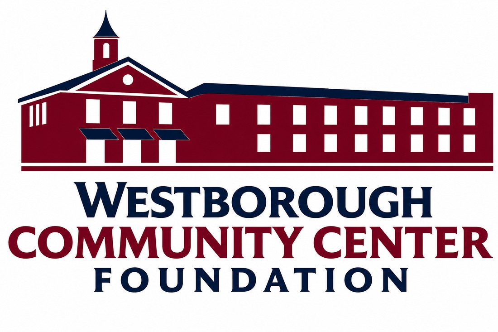

The Westborough Community Center Foundation (WCCF) is a 501(c)(3) non-profit organization committed to the long-term enhancement of the intergenerational Westborough Community Center.
The Westborough Community Center Foundation provides financial support to renovate and sustain the Westborough Community Center — funding programs in health, recreation, social services and community building — creating a vibrant, inclusive hub where all ages connect, learn, and thrive for generations to come.
The Westborough Community Center isn't just a building — it's a place where every generation can have a sense of belonging. The Center unites residents and strengthens social bonds. Kids learn here. Older adults stay active here. Families find support, veterans find camaraderie, and neighbors become friends.
The Westborough Community Center Foundation makes sure this vital resource keeps growing. We provide the supplemental funding behind the renovations, programs, and services that keep the Center vibrant, inclusive, and responsive to what our town needs. Your generosity is what keeps this shared space thriving — strengthening wellness, connection, and opportunity for everyone who calls Westborough home.
When you support the WCCF, you're investing in a healthier, more connected town today, and helping secure Westborough's next chapter.
Support the Westborough Community Center with a tax-deductible donation today.
WCCF is a 501(c)(3) nonprofit organization created by community leaders to raise funds for the Westborough Community Center, featuring an Active-Living Senior Center and Recreation Center in a renovated Town building. WCCF is independent from the Town — donations supplement Town-funded programs and services.
The Westborough Community Center Foundation is a 501(c)(3) organization. Contributions are deductible under IRS regulations and are an investment in the future of Westborough.
Every contribution brings Westborough's new Community Center closer to reality. Click a button below to give today.
Make checks payable to:
Westborough Community Center Foundation
P.O. Box 72
Westborough, MA 01581
Do you have a donor-advised fund? Please recommend a grant to help renovate the Westborough Community Center. In your DAF portal, search for:
Westborough Community Center Foundation
EIN: 42-2465044
P.O. Box 72, Westborough, MA 01581
Please note "WCCF" in your recommendation and email us at info@westboroughcommunitycenterfoundation.org so we can thank you and credit your gift.
Email Us About Your GiftEvilee Ebb is a longtime Westborough resident and retired C-level executive and nonprofit leader with more than 30 years of experience in business development, marketing, fundraising, and strategic leadership. She held senior roles at International Data Group (IDG) and other national technology and healthcare media organizations, where she helped drive growth through innovative marketing, partnerships, and business strategy. Deeply committed to local service, Evilee brings her professional expertise to the community through her work on Westborough's Council on Aging (COA) and Westborough TV (WTV).
A Westborough resident and community advocate dedicated to strengthening connections and enhancing quality of life for residents. As Co-President of the Westborough Community Center Foundation, she helps guide efforts to create a new Community Center, including an Active Living Senior Center that will serve Westborough for generations. Mirtha is a results-driven professional with extensive experience in account management, project management, and client relations, including leadership roles at a Fortune 500 corporation managing large-scale client relationships and complex system implementations. She serves on the Westborough Council on Aging (COA).
A 20-year resident of Westborough, Sara has deep roots in the community through school parent groups and local committees. She served two terms on the Westborough School Committee, including two years as Chairperson, and continues supporting youth and education as a board member for the Westborough Education Foundation and Project Graduation. Sara is Co-founder and Race Director of the annual Westborough Turkey Trot and volunteers with Westborough Connects and the Westborough Appalachia Service Project (ASP). Today, she's focused on helping the Westborough Community Center become a vibrant, multi-generational space for residents of all ages.
A longtime Westborough resident and community volunteer with a strong record of civic engagement and public service. As Treasurer of the Westborough Community Center Foundation, Dee helps lead efforts to create welcoming, accessible community spaces for residents of all ages. She brings 40 years of banking and finance experience, most recently as personal executive assistant to two multi-millionaires, and currently serves on the Westborough Advisory Finance Committee.
Maureen has been involved with the Westborough Education Foundation for over 25 years, serving as President and chairing the annual Trivia Bee fundraiser for many years. She's also active with the Westborough Cultural Council as Treasurer, the Westborough Library Foundation as co-President, and the Westborough Police and Fire Foundations as Secretary. She co-chairs the annual Turkey Trot and the Cultural Council's Arts in Common celebration, serves on the Troop Committee for Boy Scout Troop 100, and is a member of the President's Council. For over 20 years, she's volunteered as a Meals on Wheels driver at the Westborough Senior Center and worked as a Westborough election worker, and more recently she's taken on a role as an ambassador for the Economic Development Committee. Maureen thrives on working with people to make a difference.
Stay up to date on the latest developments for Westborough's Community Center.
Interested in learning more, volunteering, or discussing major gift opportunities? We'd love to hear from you.
Westborough Community Center Foundation (WCCF)
P.O. Box 72, Westborough, MA 01581
Westboroughcommunitycenterfoundation.org
Info@westboroughcommunitycenterfoundation.org
Follow us on Facebook
Follow us on LinkedIn
The Westborough Community Center Foundation (WCCF) is a 501(c)(3) nonprofit organization.
Donations are tax deductible under IRS regulations.